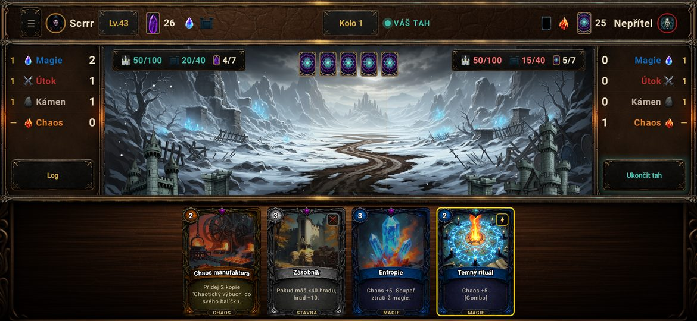
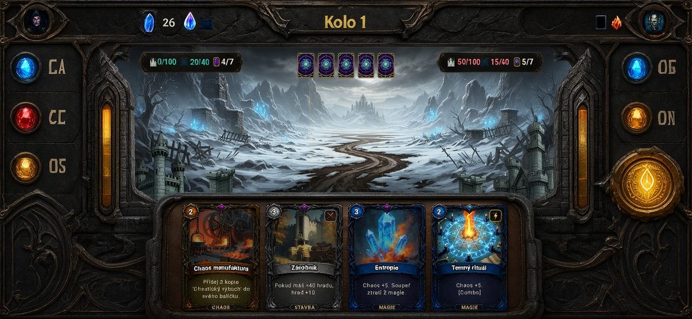
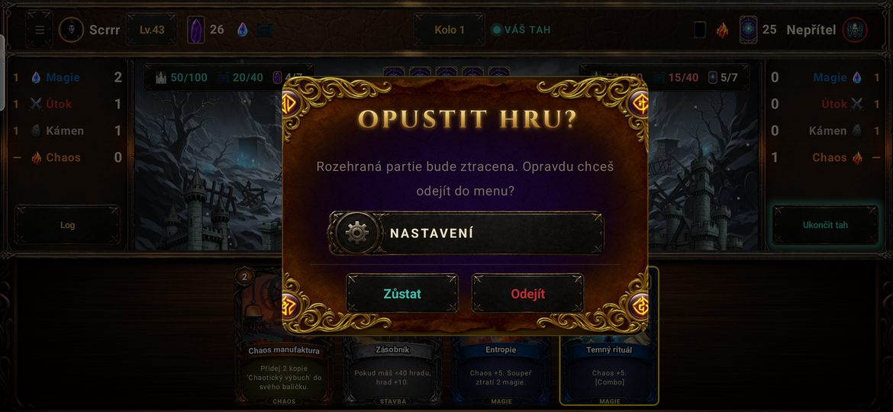
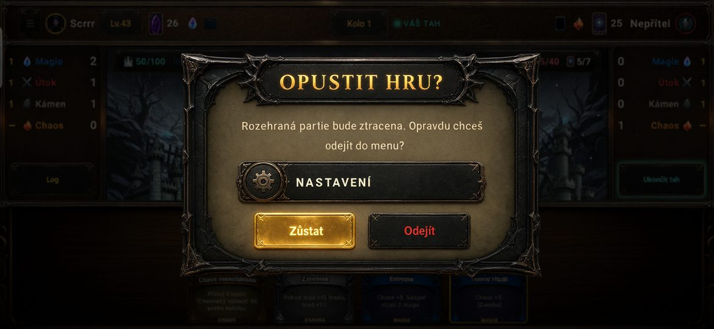
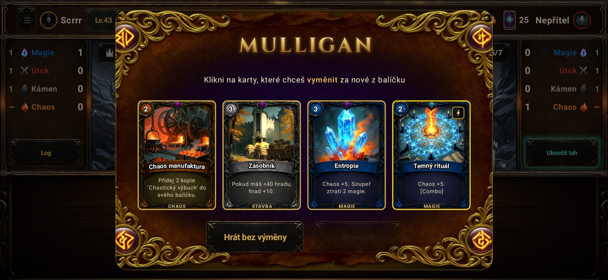
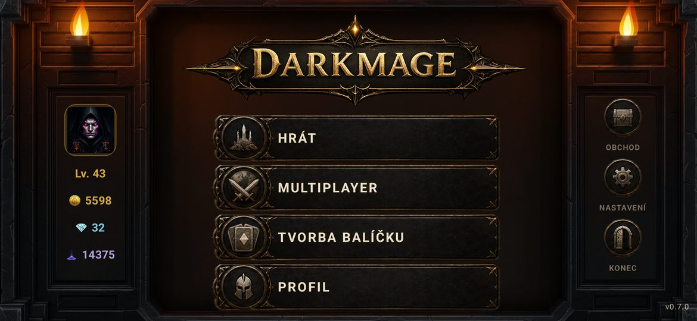
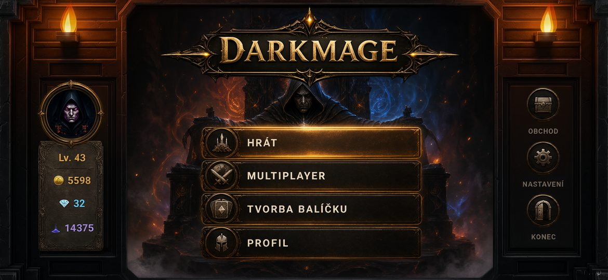
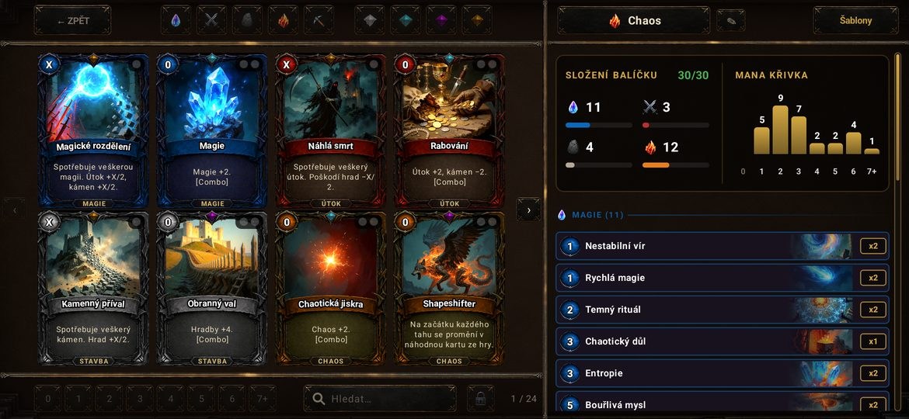
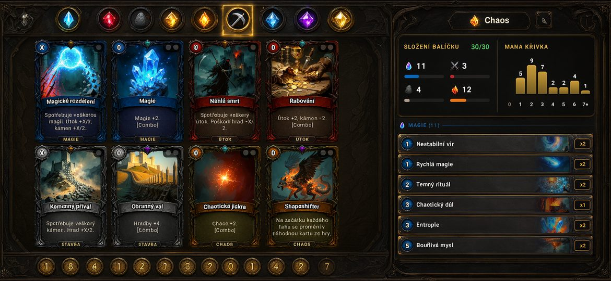
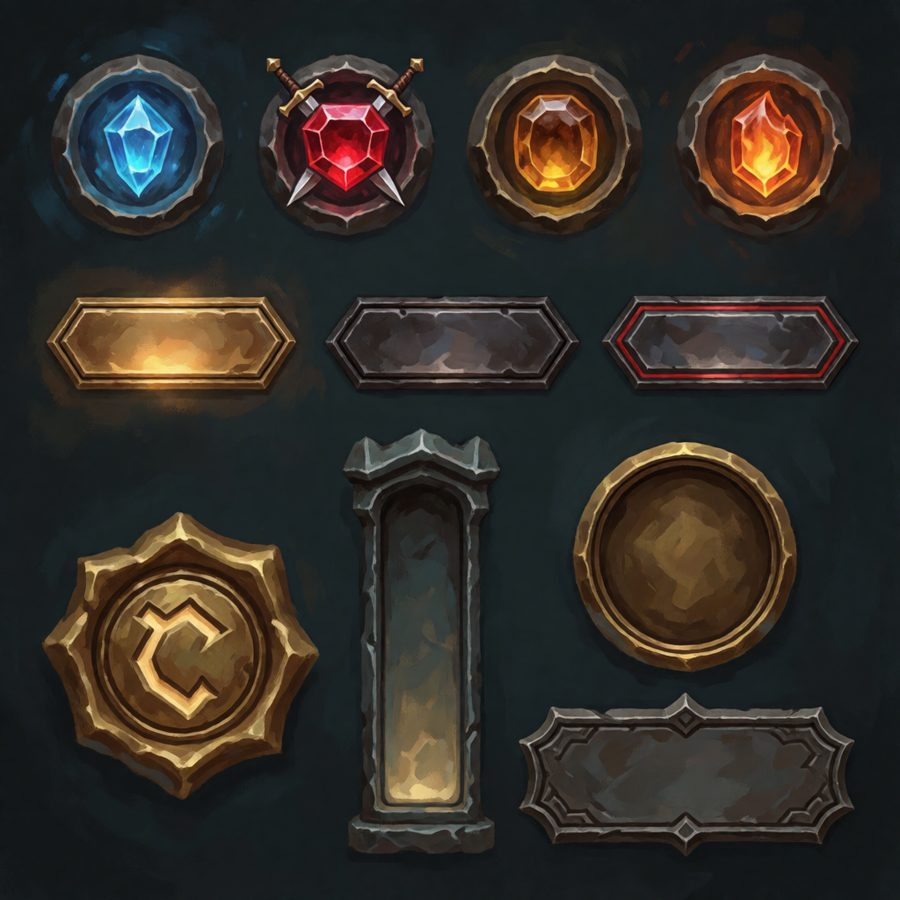

Karty teď mají sytou modrou magii, oranžový chaos a malířský styl. Rozhraní kolem nich ale mluví třemi různými jazyky. Návrh je sjednocuje do jednoho materiálu: tmavý kámen a začernalý bronz, s barvami zdrojů převzatými přímo z karet.
Navazuje na směr „bronz a tmavé dřevo“ z 5. 11. Bere jeho bronz a ubírá dřevo, jak říkal i otevřený bod v jeho README. Obrázky „po“ jsou náladové náhledy přemalované AI z mých screenshotů z telefonu. Čísla a drobné texty v nich jsou zkomolené, finální podoba bude skutečná grafika a text z Compose.
Menu je teplé dřevo s bronzem. Mulligan a dialogy mají rokokové zlaté rámy s fialovým přechodem. Bojiště a Tvorba balíčku používají ploché hnědé panely s tenkými křížky v rozích. Hráč přechází mezi třemi světy.
„Ukončit tah“ je tyrkysový text na tmavé ploše, stejně velký jako „Log“. Je to akce, kterou hráč dělá každé kolo, a vypadá jako vedlejší.
„1 Magie 2“ se čte jako řádek v Excelu. Není jasné, co je důl a co zásoba, a barvy jsou tlumené proti sytým kartám.
„50/100“ a „20/40“ v malém štítku nahoře. Hlavní ukazatel, kdo vyhrává, nemá žádný obraz.
„Váš tah“, „Ukončit tah“ i lišta questů mají tyrkysovou, jenže žádná karta ani zdroj tuhle barvu nemá. Po přechodu magie na sytou modrou se tyrkysová s karty přímo hádá.
Střed menu je tmavá prázdnota za tlačítky. Pod kartami v ruce je velký pruh hnědého dřeva. Filtry v Tvorbě balíčku jsou prázdné čtverečky s malou ikonou.
Zdroje dostanou stejné barvy jako rámy a arty karet, takže se dají číst na první pohled. Zlatá znamená jen „vybrané / aktivní“. Tyrkysová zmizí.
#3D9BFF
Útok #E0453A
Kámen #D6A24A
Chaos #FF8A2A
Bronz #B5874A
Výběr #E8C467
Kámen panelu #1A1512


rememberChangeFlashColor už existuje).Jeden rám pro všechno: mulligan, opuštění hry, konec hry, rozhodovací karty. Tmavý kámen s pergamenem uvnitř, začernalý bronz s ostrými gotickými rohy a kamenná deska s nadpisem. Hlavní volba je jasně bronzová se září, vedlejší je železná a nebezpečná má rudý text.



Mulligan dostane stejný rám jako dialog vlevo. Vybrané karty k výměně budou mít zlatý okraj a ikonu otočení, ne jen žlutý rámeček.





Celé UI se poskládá z malé sady skutečných textur, ne z obrázků kreslených kódem:
Ze sady by vznikla nová tlačítková komponenta místo dnešních PlainButton a FantasyButton, které teď v obrazovkách žijí vedle sebe.
GameColors.kt nahradit tyrkysovou, sjednotit barvy zdrojů s kartami, přidat bronz a kámen.